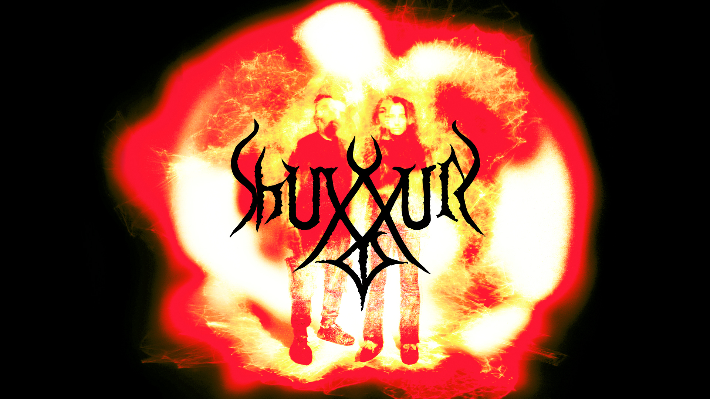

SHUXXUR English| Русский | contact

SHUXXUR [шухур] - аудиовизуальный дуэт Араша Азади и Асмик Бадоян. Дуэт был образован в 2019 году в Ереване, Армения. Их первое сотрудничество состоялось на премьере альбома Азади "Математический лабиринт" в клубе Poligraf. Азади и Бадоян играли на фестивале Synthposium в Ереване в 2019 году. Они провели масштабное аудиовизуальное представление в Планетарии №1 в Санкт-Петербурге во время фестиваля "Мавахеб", а также выступление на фестивале "Нур" в Казани в 2021 году. Они сыграли лайв сет на фестивале Geek Picnic в Москве в 2022 году и записали концертный альбом в Мастерские Музея «Гараж». Их работа сосредоточена вокруг темы неопределенности, и тесно связана с использованием генеративных художественных инструментов для звука и визуальных эффектов. Поскольку свободная импровизация является основой их практики, результат выступлений или записей всегда неизвестен. В звуковом плане их работы можно рассматривать на стыке шумовой музыки и саунд-арта. В основном они используют ноутбуки для создания звука и визуальных эффектов.
Они базируются в Нижнем Новгороде, Россия.
Биография Араша Азади:
Азади родился в 1994 году в Хамедане, Иран, и начал изучать классический персидский сетар в возрасте девяти лет. В 2012 году он поступил в Ереванскую государственную консерваторию Армении, где специализировался на композиции и начал осваивать все тонкости языка визуального программирования Max / MSP с помощью онлайн-курса, предлагаемого Массачусетским колледжем искусств. Его самые последние работы подпадают под категорию электроакустической и экспериментальной музыки и часто сопровождаются аудиовизуальными эффектами, перформансом или импровизированным танцем и театром. Имея образование в области математики и компьютерных наук, Азади также исследовал способы сочетания современных подходов к звуку с акустической и народной музыкой. На сегодняшний день его произведения были исполнены во Франции, Италии, Германии, России, США, Греции, Грузии, Иране и Армении. Он выступал вживую на таких фестивалях, как Berlin CTM Festival, Unsound Festival Yerevan Edition, Urvakan Festival и Synthposium Festival. В 2019 году он был выбран в качестве одного из художников SHAPE Platform и сделал многоканальную аудиоинсталляцию и пьесу для виолончели и магнитофонной записи для фестиваля Musikprotokoll в Австрии. Премьера его пьесы "Кайрос" для скрипки соло, магнитофона и живой электроники состоялась в "Доме Радио" в Санкт-Петербурге во время фестиваля современной музыки "реМузик" в 2022 году. Его альбомы были выпущены такими лейблами, как Kotä в Москве, Establishment Records в Берлине и Off-Record в Бельгии. С 2020 года он руководит собственным лейблом Structured Experience. В 2021-2022 он был резидентом студии Garage Studios и преподавал в Школе Дизайна НИУ ВШЭ на факультете звукового искусства и звукового дизайна. В 2022 году он получил международную премию на конкурсе Саят-Нова AGBU в Нью-Йорке, а его пьеса “Цепь” для ансамбля и голоса будет исполнена в Карнеги-холле 29 октября 2022 года.
Биография Асмик Бадоян:
Мультимедийный художник, работающий на пересечении звука, движущегося изображения и текста. Асмик родилась в Ереване, Армения. Она окончила Нижегородский государственный университет имени Лобачевского по специальности "Культурология" и получила степень магистра в Московской Школе Социальных и Экономических Наук. С 2017 по 2020 год она жила в Ереване, Армения, и работала куратором в галерее HAYP Pop Up Gallery, где совместно курировала pop up выставки, резиденции, образовательные программы и многое другое. После возвращения в Россию в 2021 году, Асмик поступила в Школу Фотографии и Мультимедиа имени Родченко, где она учится в классе Кирилла Савченкова, Полины Канис, Андрея Качаляна и Бориса Клюшникова, а также в лаборатории Андрея Смирнова.
С 2019 года Асмик играет аудиовизуальные сеты с композитором Арашем Азади, с которым они создали свой дуэт SHUXXUR.
Ссылки:
Bandcamp
SoundCloud
Youtube
Designed by SHUXXUR